The Living Portrait
The Living Portrait: Blood and Inner Water
An insight into the inner terrain.
Under the microscope, a single drop of blood or urine holds shapes, patterns, information and light that most people never get to see.
I call this consult The Living Portrait: Blood and Inner Water, an insight into your inner terrain. It brings together two views of you: your Living Blood Portrait, showing what is moving within, and your Inner Water Portrait, showing what your body alchemizes, what it transforms and refines.
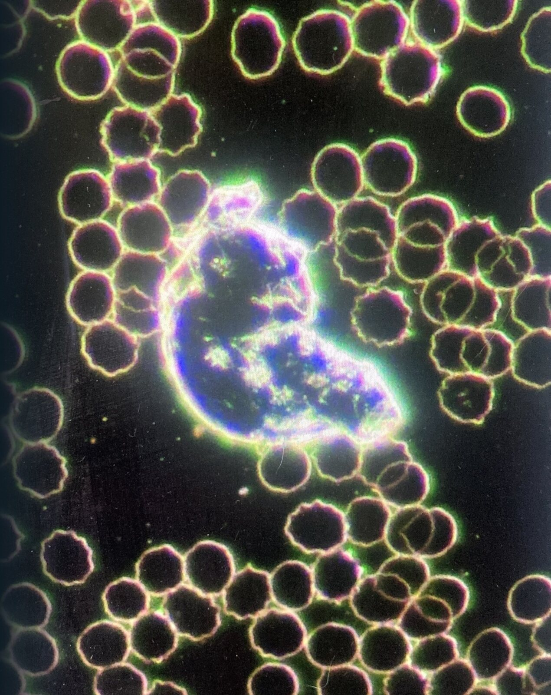
What is a Living Blood Portrait?
A single drop of blood, reflecting what is moving within you now.
The patterns and holograms in your blood reflect what is happening in your body’s terrain: physically, emotionally and energetically.
Based on the Holographic Blood Method, developed over more than 40 years by Dr. Harvey Bigelsen.
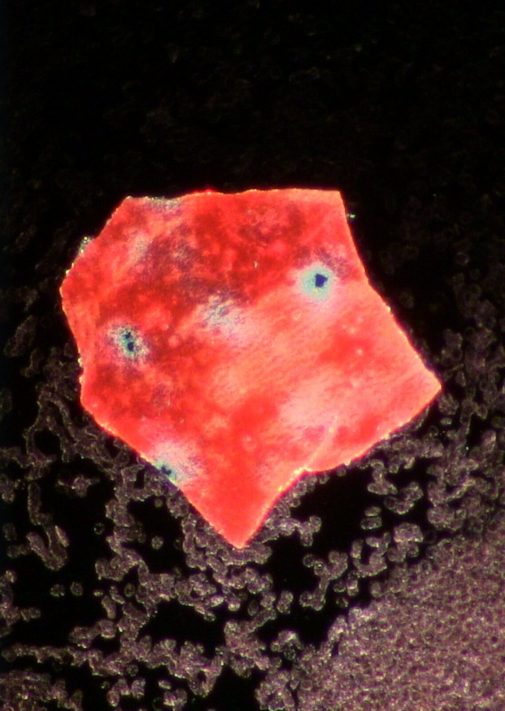
Your Living Blood Portrait
An in-depth reading, unique to you
- The key findings from your Living Blood Portrait
- What your body is concerned about, and where it may be rooted
- Areas for continued exploration
- Recommended modalities
- Images of your own living blood
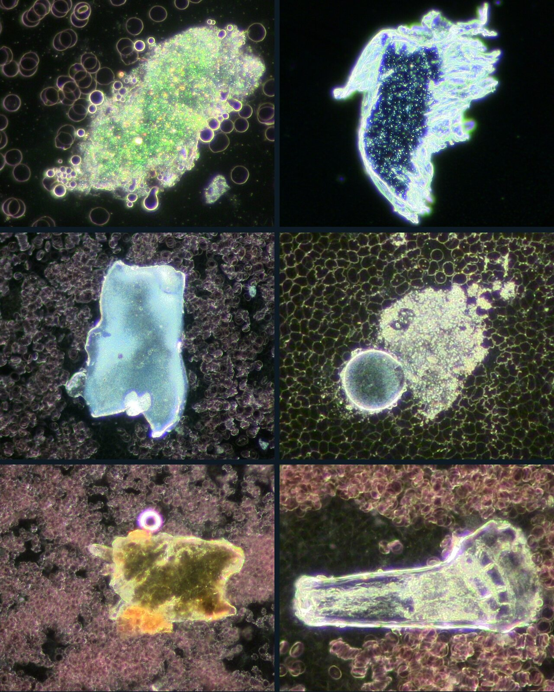
Your Living Blood Portrait
Your experience
What was your consult like for you?
What stayed with you from your report?
What questions or reflections are you holding?
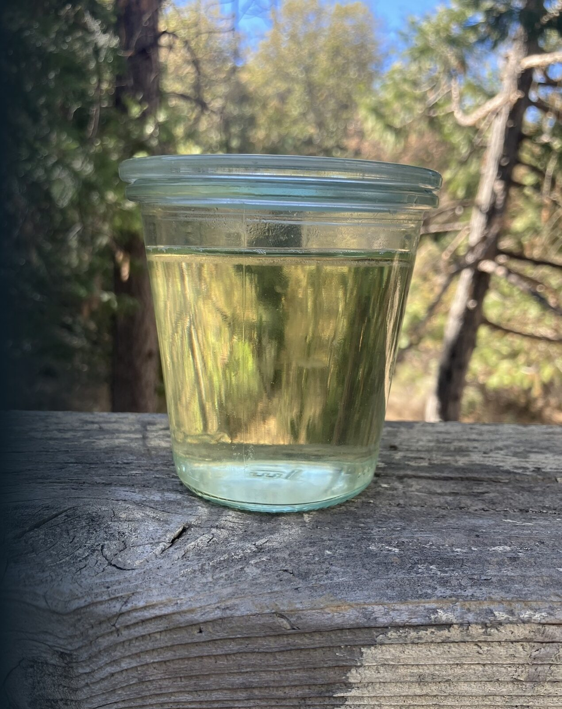
Inner Water Portrait · The urine consult
Reading the Inner Water
What your urine sample shows, and how I read it.
Why urine is part of the consult
Two views of the same living system
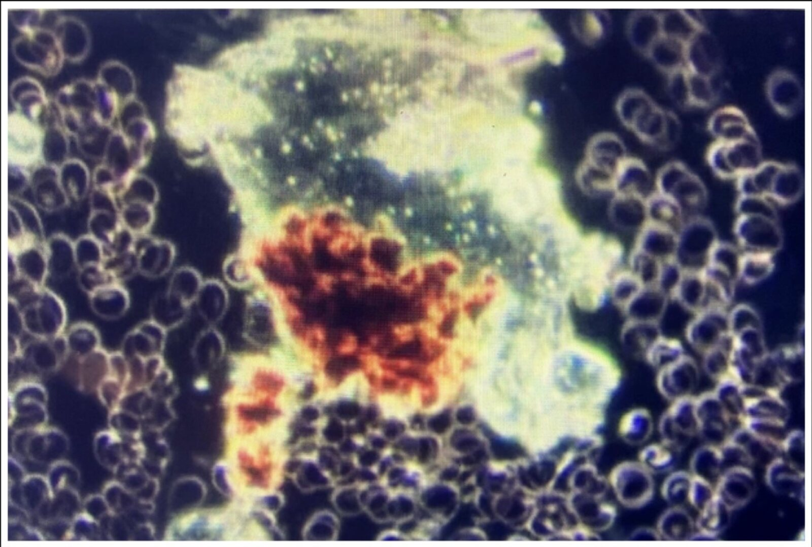
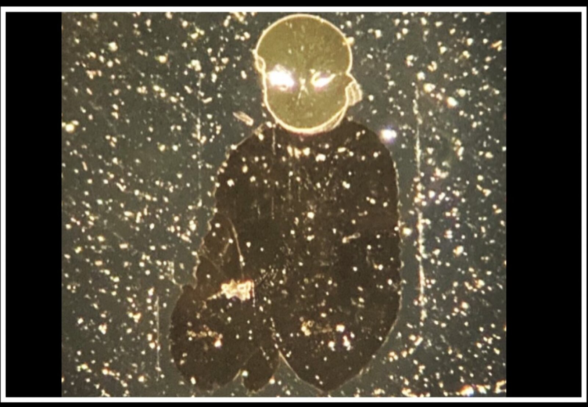
What do you see?
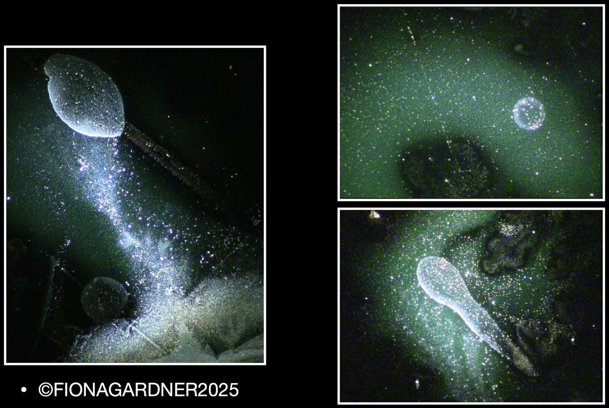
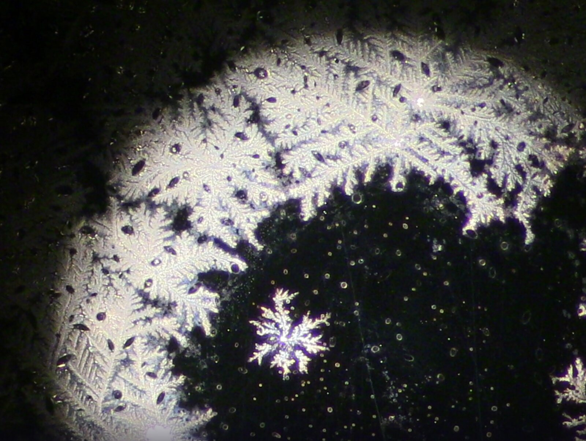
The process
From you to the microscope
- Collect. At home, with full instructions sent to you by email.
- Return. In a 50 ml dropper-style bottle of your own.
- On the slide. A drop is placed on the microscope slide.
- Watch. Observed and photographed as it dries.
Biosignatures of the Inner Water
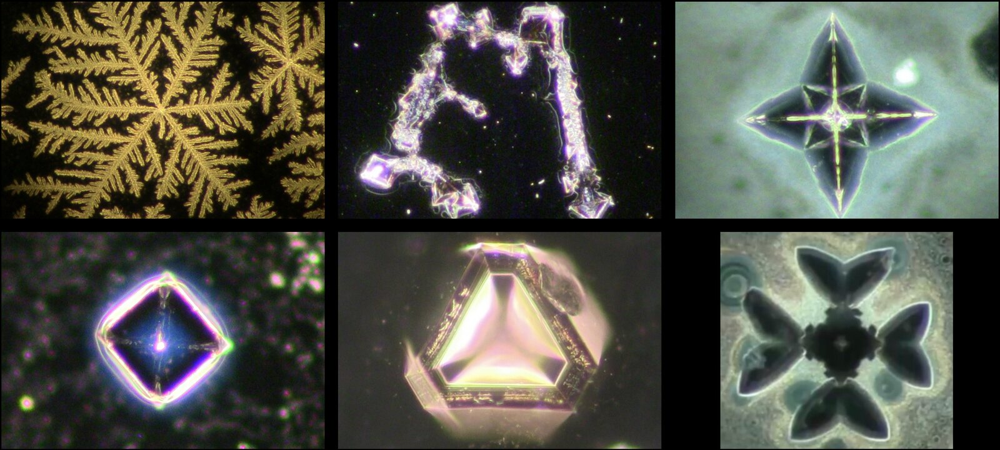
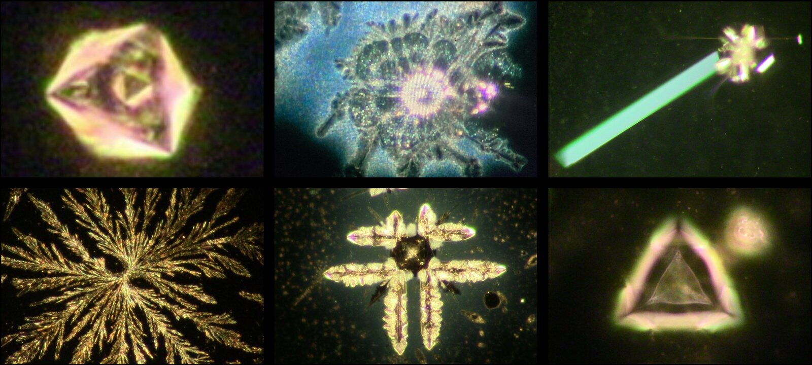
How energy moves
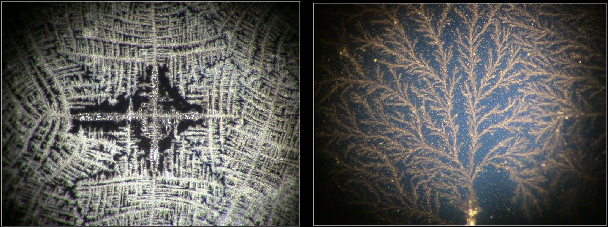
A client’s reflection
My middle name is Deborah, Hebrew for “honeybee”.
My husbands family are beekeepers and the raw honey is an heirloom on our farm. We melt the beeswax in the winter to make our candles and eat the hand harvested propolis to boost our vitality and to feel connected to the bees.
I love to sit with the hive, I love the feel of their feet on my body. I have loved honeybees since I can first remember. Their sound is magical to me. Every piece of art I own is honeybee art.
We are a people of bees.
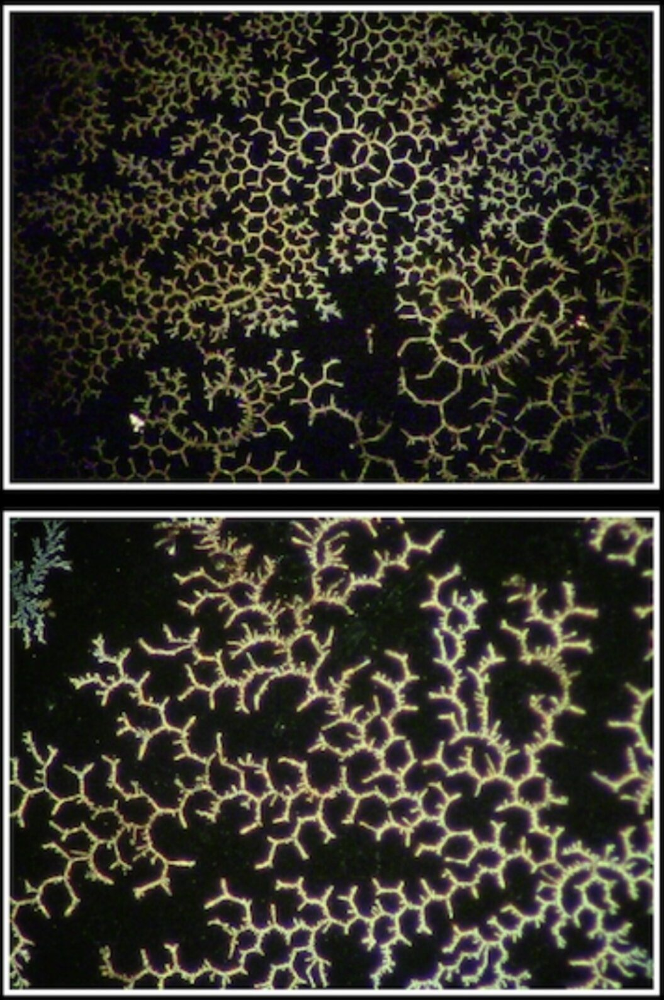
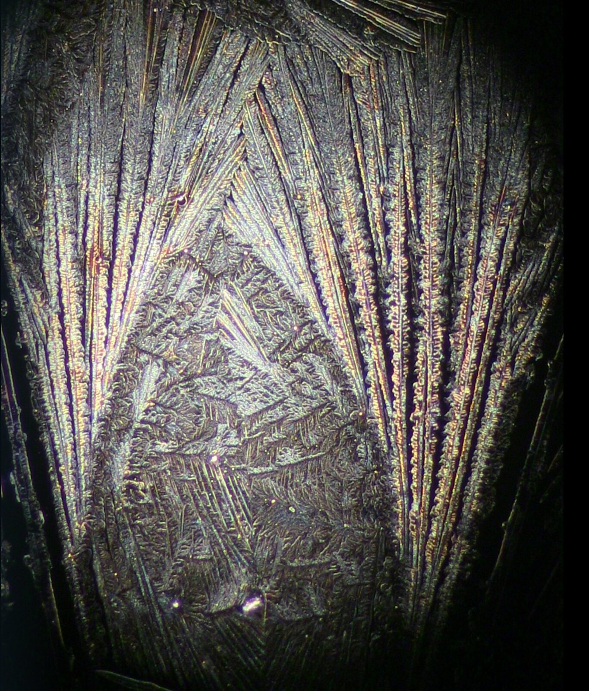
What it represents
A visual, artistic language: a reflection of your inner water, to contemplate alongside your bloodwork.
A space for reflection, alongside your regular health care.
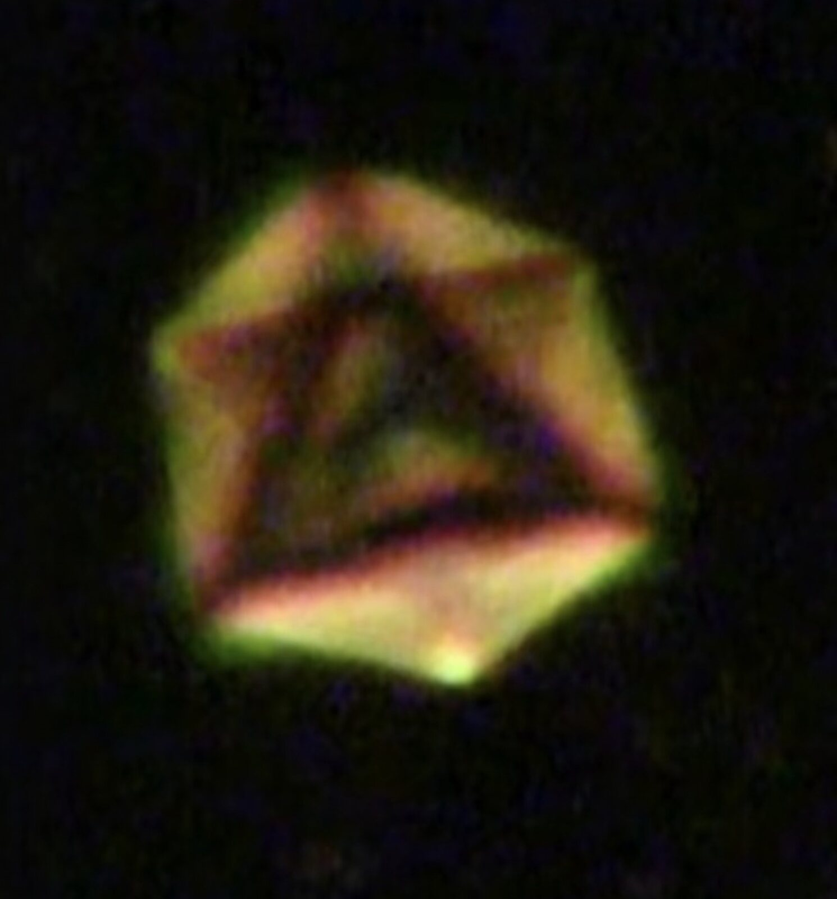
Before your own urine consult
Your questions
- What questions do you have about the process?
- What did you feel as you looked at these images?
- Is this really urine?
To arrange your consult, email fionagardner1111@gmail.com. Prices and details are on the Services page.
All images © 2026 Fiona Gardner. You’re welcome to share them with credit to Fiona Gardner and a link to fionagardner.org.